Models, Cases, and Modern Evidence
Institute of Economics, Scuola Superiore Sant’Anna
Invalid Date
Part I — Concepts and qualitative models
Part II — Formal models and modern evidence
Interactive: a live polling game (Part I, on your phone) and a Shiny app for the two models (Part II).
We start from the general framework of innovation diffusion of Nelson, Peterhansl & Sampat (2004).
We then study the most common model of the diffusion of a single successful technology, based on Mansfield (1961).
Next we analyse a model of competing technologies introduced by Arthur (1989).
Finally, we look at three recent empirical papers that bring these ideas to data on AI, firm networks and international trade.
Key insight: diffusion is not just about the technology itself, but about how it interacts with social systems, networks and existing practices.
Everett Rogers (1962) identified five key elements:
Core question: how, why, and at what rate do new ideas and technologies spread through a population?
Slow initial adoption → rapid growth → saturation.
History matters (Dosi, 2023). Three levels of “historicity”:
Mechanisms: dynamic increasing returns (learning by doing, network effects); non-linearities; lock-in to inferior technologies.
Supply-side
Demand-side
Consequence: technologies can dominate not because they are best, but because they got there first or had better early support.
We have seen Rogers (characteristics of innovations) and Dosi (path-dependence, increasing returns).
Nelson et al. (2004) ask: can we build a systematic framework that explains why different innovations diffuse in fundamentally different ways?
Two dimensions:
Adoption of novelty covers many processes — religious practices, dress fashions, medical treatments, farming practices, business methods.
How to play
Scoring
Access the platform
Pool: Technology diffusion models
Username: your first name
For each technology: look, vote in the pool which of the four models it fits — then we recap, with the live leaderboard alongside.
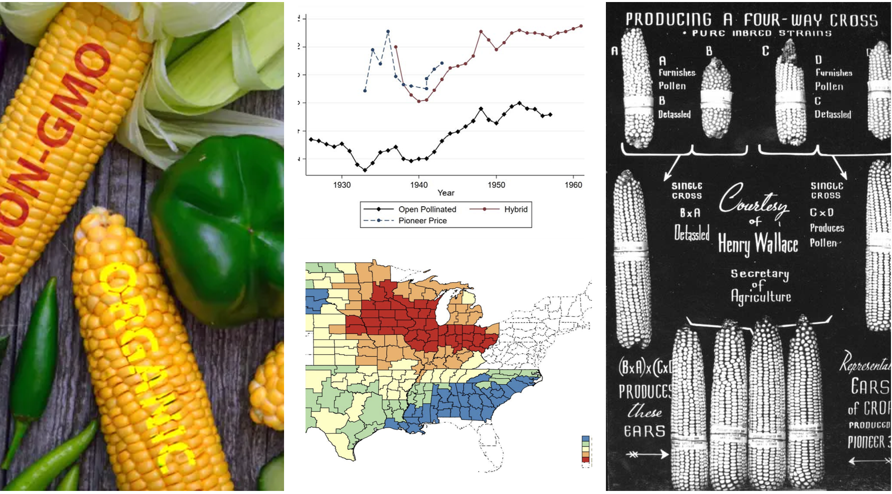
📱 Vote in the pool — which of the four models?
Model I (rational choice), with elements of Model III.
Ryan & Gross (1943); Griliches (1957); Berlan & Lewontin (1986); Kloppenburg (1988).
📱 Vote in the pool — which of the four models?
Model I (rational-choice diffusion) — strong, quantitative feedback.
Vincenti (1994).
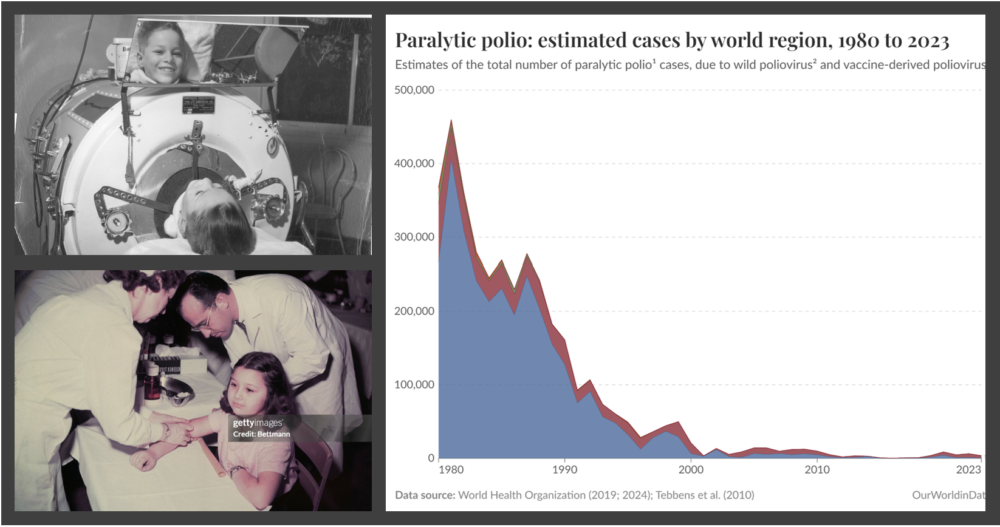
📱 Vote in the pool — which of the four models?
Model I (rational choice) with rapid technology switching.
Robbins (1999); Salk et al. (1994); Blume & Geesink (2000).
📱 Vote in the pool — which of the four models?
Model III (social construction) — despite seemingly objective criteria.
Lerner (1998, 2001); Fletcher (1997); Olsen & Gotzsche (2001).
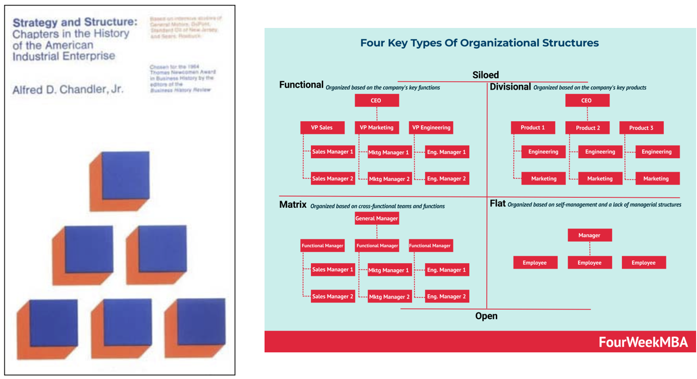
📱 Vote in the pool — which of the four models?
Model I (rational choice) with strong elements of Model III.
Chandler (1962); Williamson (1975); Fligstein (1985); DiMaggio & Powell (1983).
📱 Vote in the pool — which of the four models?
Model II (quasi-rational, lock-in) — the canonical path-dependence case.
David (1985), AER; Liebowitz & Margolis (1990), JLE.
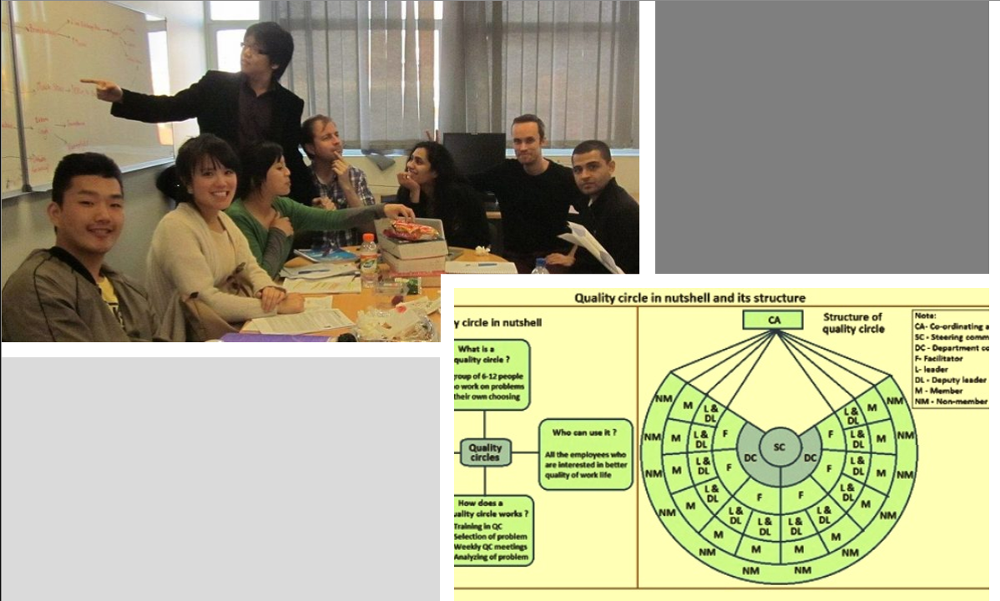
📱 Vote in the pool — which of the four models?
Model IV (fad / fashion), with Model III features.
Meyer & Rowan (1977); Abrahamson (1996); Abrahamson & Fairchild (1997).
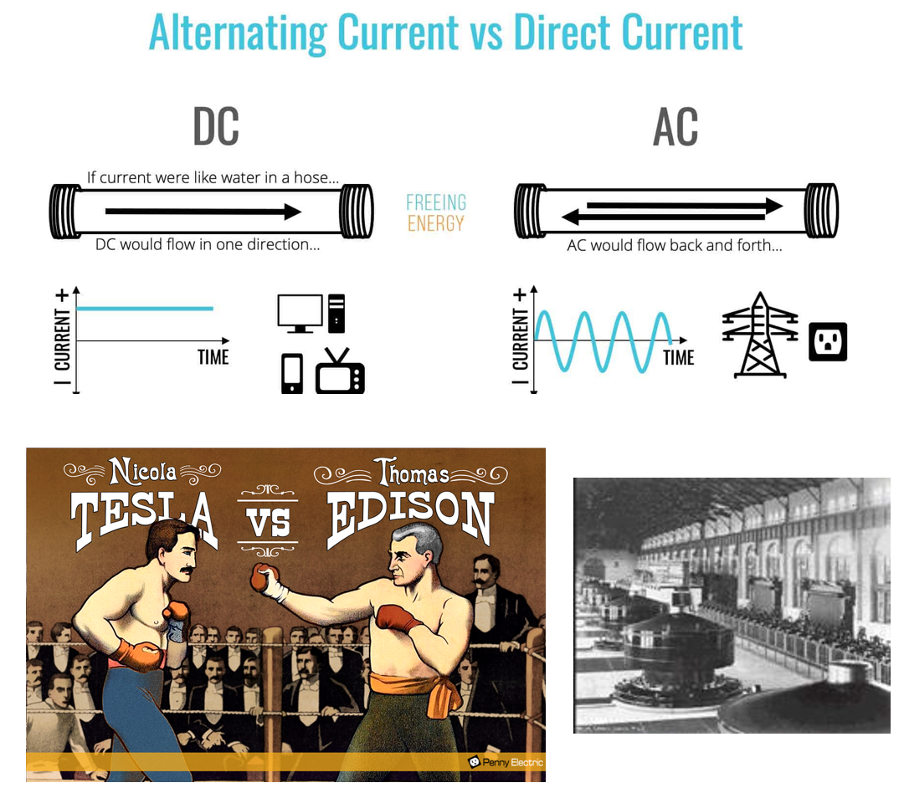
📱 Vote in the pool — which of the four models?
Model II (quasi-rational, lock-in).
David (1985); Hughes (1983), “Networks of Power”; McNichol (2006).
“Once an innovation is introduced by one firm, how soon do others in the industry come to use it? What factors determine how rapidly they follow?” — Mansfield (1961)
Innovations: by-product coke oven, diesel locomotive, tin container, shuttle car (iron & steel, railroads, brewing, coal).
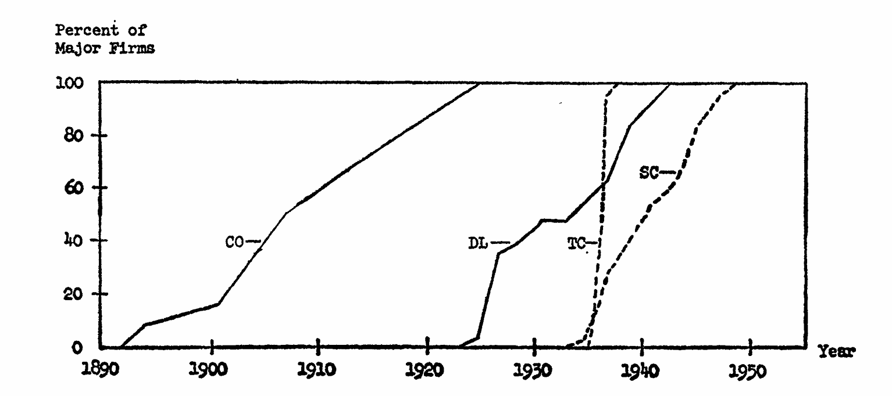
Innovations: car retarder, trackless mobile loader, continuous mining machine, pallet-loading machine.
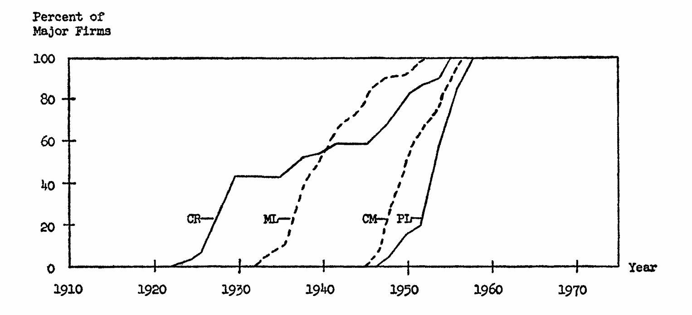
Innovations: continuous wide-strip mill, centralized traffic control, continuous annealing, high-speed bottle filler.
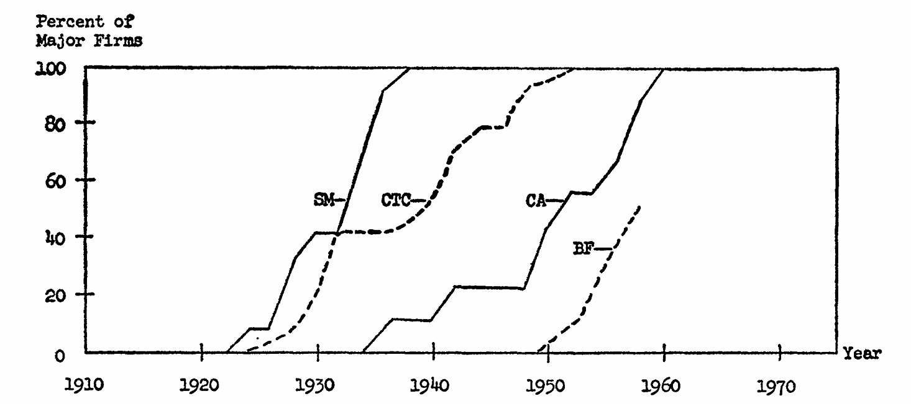
The rate of adoption depends on two factors:
Key insight: the more firms have already adopted, the faster the rest adopt (information spreads, uncertainty falls) — generating the S-curve.
Time is continuous; \(n\) potential adopters, \(n(t)\le n\) already adopted.
Adopters in a small interval \(\delta\): \[ n(t+\delta)-n(t)=\lambda(t)\,(n-n(t))\,\delta. \]
With \(x(t)=n(t)/n\) and \(\delta\to 0\): \[ \dot{x}(t)=\lambda(t)\,(1-x(t)). \]
\[ \lambda(t)=a_1+a_2 x+a_3\pi+a_4 c+a_5 x\pi+a_6 x c+\dots \]
Rewrite \(\lambda(t)=\lambda_0+\lambda_1 x(t)\):
\[ \dot{x}(t)=(\lambda_0+\lambda_1 x)(1-x). \]
With \(x(t_0)=x_0\): \[ x(t)=\frac{(\lambda_0+\lambda_1 x_0)e^{(\lambda_0+\lambda_1)(t-t_0)}-\lambda_0(1-x_0)} {(\lambda_0+\lambda_1 x_0)e^{(\lambda_0+\lambda_1)(t-t_0)}+\lambda_1(1-x_0)}. \]
For \(t_0=0,\;x_0=0\;(\lambda_0\neq 0)\): \[ x(t)=\frac{e^{(\lambda_0+\lambda_1)t}-1}{e^{(\lambda_0+\lambda_1)t}+\lambda_1/\lambda_0}. \]
Faster diffusion when: higher profitability (stronger advantage); lower costs; stronger imitation effects.
The imitation parameter ranged from 0.2 to 2.4 — higher values mean faster acceleration once adoption begins.
Key limitation: the model assumes everyone eventually adopts — it does not explain failed diffusion or competing technologies.
Sliders for \(\lambda_0,\lambda_1,x_0\) → watch \(x(t)\). Mansfield tab: a fast S-curve (\(\lambda_1=2.4\)) vs a slow one (\(\lambda_1=0.2\)); set \(\lambda_0+\lambda_1<0\) for partial diffusion (\(x\to-\lambda_0/\lambda_1\)).
Two technologies; the return to a technology rises with its own adoption: \[ \pi_A=a_A+r_A n_A,\qquad \pi_B=a_B+r_B n_B. \]
Questions: will one dominate or both coexist? Does the better technology always win? How do early choices matter?
Insight: the answer depends on increasing, decreasing or constant returns to adoption.
Time is discrete; two technologies \(i=1,2\). At each date a new agent picks the technology with the higher payoff \(\pi_i(t)\), which can depend on the number of adopters.
Population share \(x_i(t)=n_i(t)/t\) (a share over choices made so far, unlike Mansfield’s \(x=n(t)/n\)).
The process can be probabilistic; we study its dynamics under increasing, decreasing and constant returns.
Payoff \(\pi_i=a_i+r_i\,n_i(t-1)\).
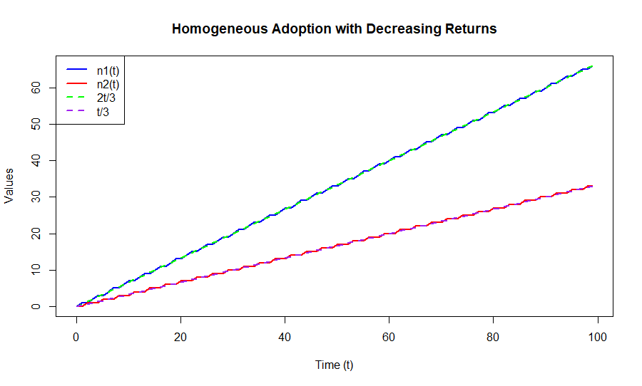
Decreasing returns — shares settle.
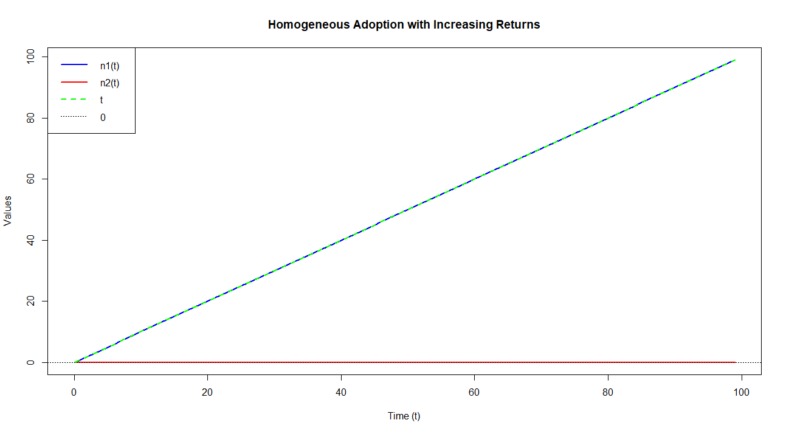
Increasing returns — one technology takes over.
Two agent types arrive at random; payoff \(\pi_i=a^j_i+r\,n_i(t-1)\), with \(a^1_1>a^1_2\), \(a^2_1<a^2_2\).
Define \(d(t)=n_1(t)-n_2(t)\):
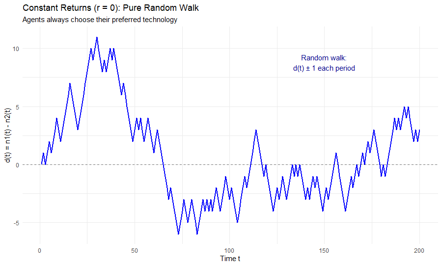
\(r=0\): random walk
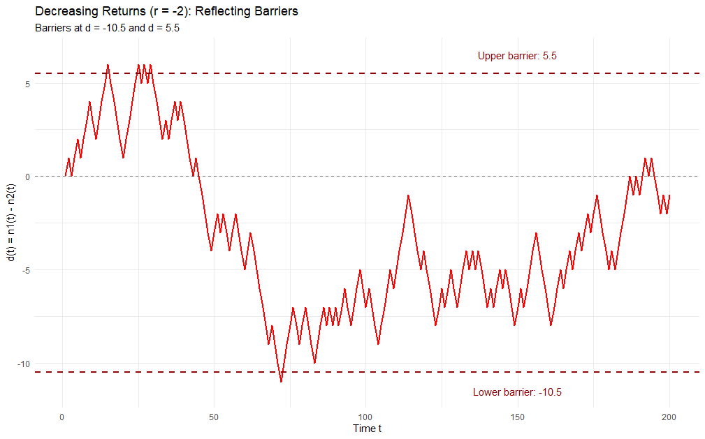
\(r<0\): reflecting
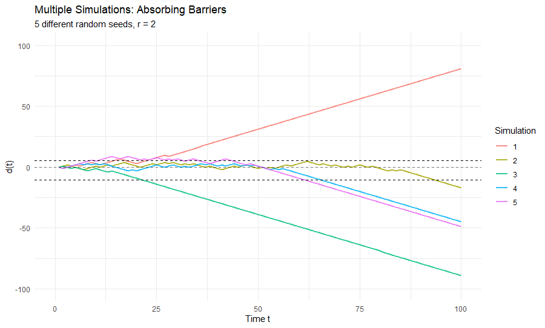
\(r>0\): absorbing (lock-in)
| Predictable | Flexible | Ergodic | Efficient | |
|---|---|---|---|---|
| Constant returns | Yes | No | Yes | Yes |
| Decreasing returns | Yes | Yes | Yes | Yes |
| Increasing returns | No | No | No | No |
With increasing returns, history matters: early random events can select the winner — possibly an inferior technology (lock-in).
Set \(a^j_i\), the return \(r\), the seed and horizon → watch \(d(t)\) and the barriers. Arthur tab: under \(r>0\), change only the seed and the winner changes (non-ergodicity); \(r<0\) gives stable coexistence.
Different mechanisms (profitability vs network effects vs social construction) → fundamentally different diffusion patterns.
Nelson et al. (2004) studied 20th-century innovations. What about 21st-century general-purpose digital technologies — AI, machine learning, big data, IoT, blockchain?
How they differ from the historical cases:
Research challenge: with no clean adoption register, how do we measure who actually uses an emerging technology, and identify how it spreads?
| Indicator | Strengths | Limitations |
|---|---|---|
| Patents | Objective, detailed | Lag actual use; miss adoption |
| R&D spending | Input measure | Not available at fine granularity |
| Surveys | Direct questions | Small samples; response bias |
New approaches: web scraping, NLP/LLMs, network data, digital traces — real-time, comprehensive, but with measurement error and selection.
Sample: 1.1M firms in Germany, Austria, Switzerland (2022). Method: web scraping + transformer LM → deep vs superficial AI knowledge (categories overlap).
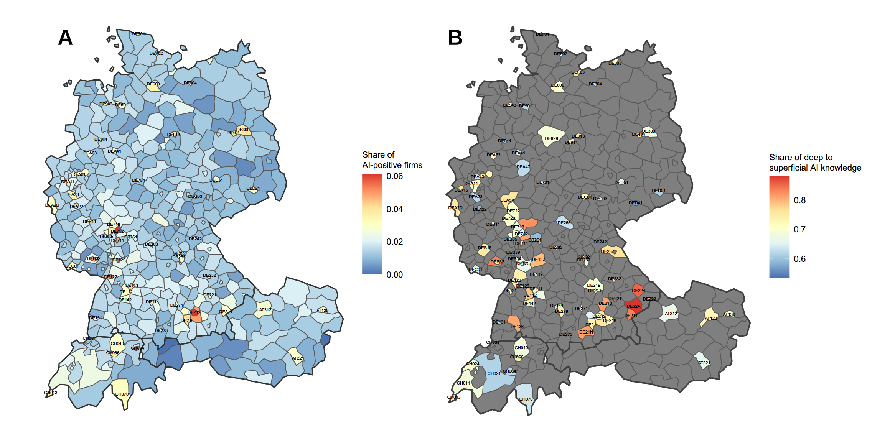
Hot-spots around major cities and German AI research centres; many regions near zero; hot-spots show a higher share of deep vs superficial knowledge.
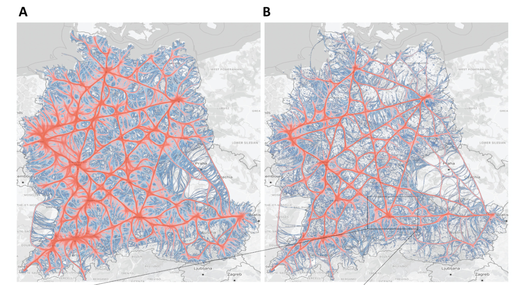
AI adopters are highly interconnected among themselves but peripheral to the overall firm network — a closed system that hinders broader diffusion.
Three channels through which AI adoption spreads (average marginal effects on having deep AI knowledge):
Reading: AI knowledge circulates inside a closed club of well-connected adopters that sits peripheral to the broader firm network → the classic epidemic (susceptible firms catch it from neighbours) breaks down.
Core idea: importing a product can mean importing the knowledge embedded in it — an imported MRI machine carries image-processing algorithms, materials science and software design that local firms can learn from, reverse-engineer and build on.
Two distinct kinds of sectoral linkage:
Key finding: the two are empirically distinct — a sector buys goods from one set of sectors but cites patents from a different set. So knowledge does not flow along the same paths as goods.
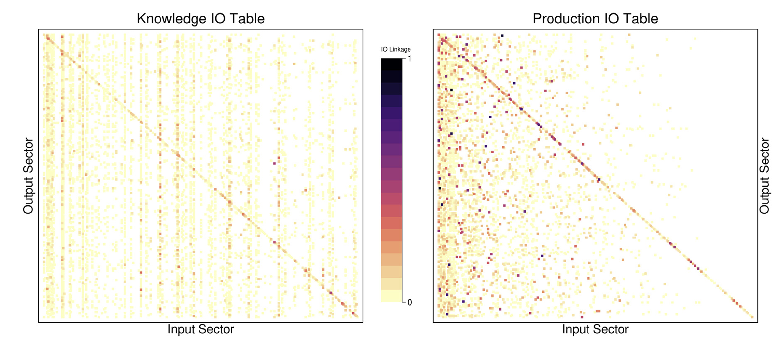
Different inter-sectoral patterns; knowledge linkages less concentrated; more persistent for the US (less so in other countries).
\[ \text{EmbTechK}^h_{i,t}=\prod_{l\neq h}\Big(1+\textstyle\sum_{p\in P_l}w^l_{(p)}K^p_{\text{US},t}M^p_{\text{US},i,t}\Big)^{\kappa^{l,h}_{\text{US},t}} \] \[ \text{EmbTechP}^h_{i,t}=\prod_{l\neq h}\Big(1+\textstyle\sum_{p\in P_l}w^l_{(p)}K^p_{\text{US},t}M^p_{\text{US},i,t}\Big)^{\rho^{l,h}_{\text{US},t}} \]
\(K\): US subsector knowledge stock; \(M\): imports from the US; \(\kappa\): knowledge IO weights; \(\rho\): production IO weights. Own sector \(l\neq h\) excluded.
82 countries, 292 sectors, 1995–2015; IV = US exports to dissimilar countries (outside the importer’s similarity cluster).
| Outcome | Knowledge-weighted | Production-weighted |
|---|---|---|
| Elasticity (patents) | 0.666*** | 0.003** |
| Elasticity (fwd. cites) | 0.545*** | 0.002* |
| US backward citations | 1.023*** | 0.005* |
A 1% rise in knowledge-weighted imports → ≈0.67% more patenting; knowledge linkages are orders of magnitude more effective than production linkages.
Setting: mobile apps — a fast-growing, AI-intensive, heavily-traded digital service. 35,575 apps (2015–2020), users by country.
Measurement: link app descriptions to developers’ AI patents with Google’s BERT (cosine similarity) — billions of app–patent pairs.
Identification: a Heckscher-Ohlin cost-shifter instrument (industry AI-intensity × country AI-abundance × pre-2008 AI patents), \(F\approx 1{,}384\).
The “click-throughs −75% / views −33% / purchases −81%” figures are a separate cited field experiment (Alibaba), not Sun & Trefler’s own autocracy estimate.
| Mechanism | Across firms (Dahlke) | Across countries (Ayerst) |
|---|---|---|
| Indirect | Regional/sectoral mimetic pressure | Trade exposure to frontier knowledge |
| Direct | Firm hyperlinks, reciprocal links | Knowledge-weighted imports |
| Network position | Embeddedness in AI network | Position in global value chains |
| Moderators | Cognitive proximity | Knowledge vs production linkages |
Plus regulation (Sun & Trefler): cross-border data rules shape where AI services can diffuse.
Across firms (Dahlke): AI knowledge trapped in closed clusters; peripheral firms excluded even when geographically close; mimetic pressure strong in hot-spots; embeddedness crucial but creates closure.
Across countries (Ayerst): need absorptive capacity; knowledge linkages > production linkages; importing the “wrong” products misses spillovers; own knowledge stock complements imported knowledge.
Regulation (Sun & Trefler): cross-border data rules shape where AI-enabled services can diffuse.
Technological Diffusion